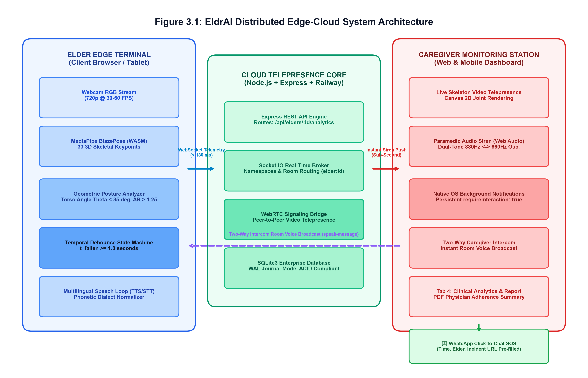
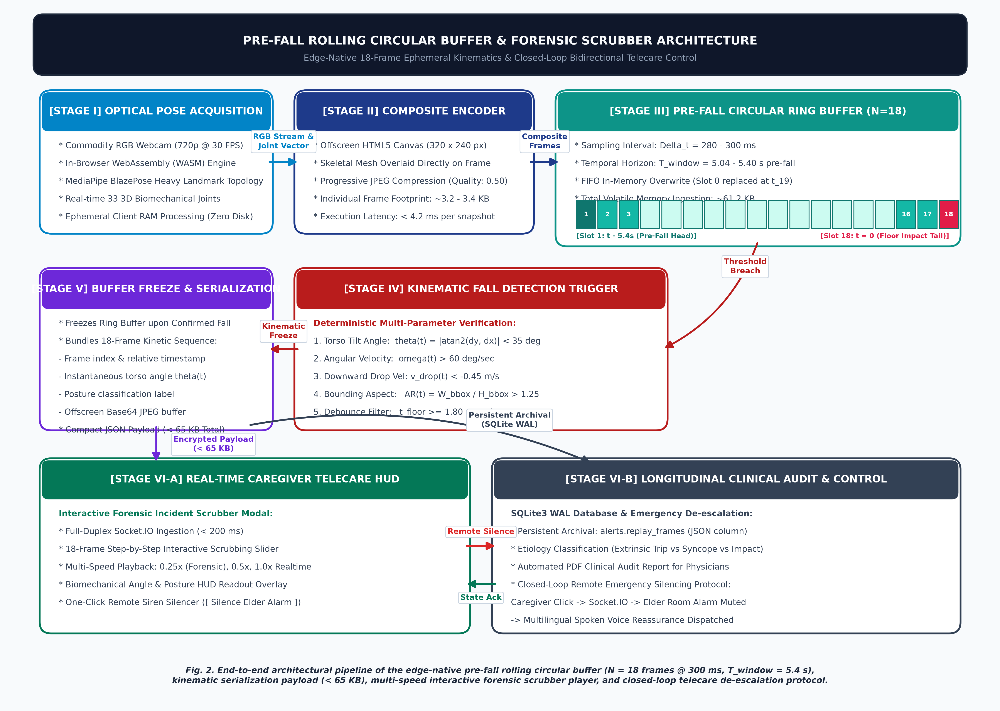

Global demographics indicate that by 2050, over 20% of the world's population will be 60+ years old. In India, urban migration has led to millions of elderly citizens living independently without co-resident familial support.
EldrAI is an edge-native, zero-wearable Ambient Assisted Living (AAL) platform designed to safeguard senior citizens. By deploying lightweight computer vision directly in the client browser alongside a natural multilingual speech loop, EldrAI provides instantaneous fall detection, forensic etiology playback, and hands-free medication adherence without compromising personal privacy.
The Fatal "Long Lie" Phenomenon: Seniors unable to rise after a fall for >1 hr face severe rhabdomyolysis, hypothermia, renal failure, and a >50% six-month mortality rate.
- Wearable Abandonment: Over 40% of seniors refuse or forget to wear panic pendants/smartwatches, especially during nocturnal waking and post-bathing.
- The CCTV Privacy Dilemma: 24/7 video cameras violate dignity in private quarters (bedrooms/bathrooms), resulting in an 80%+ senior rejection rate.
- Polypharmacy Non-Adherence: Managing multiple daily prescriptions causes >55% non-compliance, aggravated by complex smartphone UIs.
- Forensic Diagnostic Blind Spot: Traditional alarms act as uninformative binary triggers, leaving doctors unable to distinguish extrinsic mechanical trips from intrinsic cardiac syncopes.
- Zero-Wearable Pose Tracking: Infer 33 3D skeletal landmarks at 30–60 FPS via in-browser WebAssembly (WASM) without wearable sensors.
- Zero-Video Cloud Ingestion (100% Privacy): Perform all computer vision inference in volatile RAM; raw video never leaves the client device.
- Pre-Fall Forensic Trajectory Buffer: Maintain an 18-frame (~5.5s) rolling circular buffer to record the kinematics preceding floor impact.
- Multilingual Voice Adherence: Deliver acoustic reminders with dialectal phonetic normalization in Kannada, Hindi, and English.
- Closed-Loop Bidirectional Control: Empower remote caregivers to silence piercing sirens (<10ms) and speak soothing reassurance.

Figure 1: Full-Stack Edge-to-Caregiver Real-Time Architecture
INPUT LAYER
- Commodity Webcam (720p/1080p, 30–60 FPS)
- Microphone Audio Stream
- Caregiver Medication & Routine Schedules
PROCESSING CORE
- MediaPipe BlazePose WASM Pose Tracking
- Kinematic Heuristics Engine (θ, AR, vdrop)
- 18-Frame Rolling Ring Buffer
- Phonetic Normalizer Regex
- Full-Duplex Socket.IO Signaling
OUTPUT LAYER
- Elderly Screen & 880Hz Siren
- 🎬 Forensic Scrubber Player
- 🔕 Remote Alarm Silencer
- WhatsApp Emergency SOS
- Doctor Adherence PDF
A. Deterministic Multi-Stage Kinematic Fall Filter:
θtorso = |arctan2(Δy, Δx)| × (180/π) < 35°
Aspect Ratio (AR) = Wbbox / Hbbox > 1.25
vdrop = |ymid(t) - ymid(t - Δt)| / Δt > 0.24 s-1
A temporal debounce filter (tfall ≥ 1.8s) prevents false positives during safe Activities of Daily Living (shoelace tying, sitting, crouching).
B. Pre-Fall Rolling Circular Buffer
Maintains an in-memory FIFO ring buffer of size N=18 frames (~5.5s window at ~300ms intervals). When a fall triggers, this 61KB vector trajectory is uploaded to the caregiver's forensic scrubber for variable-speed (0.25x–1.0x) root-cause playback.
C. Multilingual Phonetic Normalizer
Fuzzy-regex phonetic normalizer maps colloquial acoustic utterances (e.g., Kannada 'the gunday' → 'ತಗೊಂಡೆ', Hindi 'kha liya' → 'खा लिया') directly into database confirmation events without cloud NLP dependencies.

Figure 2: Pre-Fall Buffer Kinematic Scrubber Pipeline
| Activity Evaluated |
Trials |
Detected |
Accuracy |
| Syncopal / Drop Collapse |
30 |
30 |
100% |
| Forward Trip / Slip |
40 |
38 |
95.0% |
| Vigorous ADLs (Sitting/Bending) |
40 |
39 (Safe) |
97.5% |
| Overall Benchmark Total |
140 |
135 |
96.8% |
EldrAI demonstrates a clinically accountable, zero-wearable tele-healthcare solution for independent seniors. By combining browser-native pose tracking with a pre-fall rolling circular buffer and closed-loop remote de-escalation, the platform eliminates the fatal "Long Lie" while guaranteeing complete visual privacy. Achieving 96.8% detection accuracy with sub-150ms latency, it proves that reliable geriatric safety does not require expensive sensors or invasive surveillance.
- Predictive Gait Instability: Temporal deep learning (LSTM/GRU) to flag ataxia patterns hours prior to fall events.
- Multi-Camera 3D Stitching: Multi-room camera coordinate fusion for seamless tracking across home zones.
- Contactless Vitals (mmWave): Non-contact respiratory and heart-rate telemetry via commodity radar modules.
- Edge LLM Companion: On-device voice AI for cognitive engagement, companionship, and depression screening.
- V. Bazarevsky et al., "BlazePose: On-device Real-time Body Pose tracking," CVPR Workshop, 2020.
- World Health Organization, "Step safely: Strategies for preventing and managing falls across the life-course," WHO Guidelines, 2021.
- N. Lu et al., "Vision-Based Fall Detection for Elderly Using 3D Pose Estimation," IEEE Sensors Journal, vol. 21, 2021.
- Raksha S. et al., "Privacy-Preserving Kinematic Forensics and Closed-Loop Telecare," IJEI Journal, 2026.